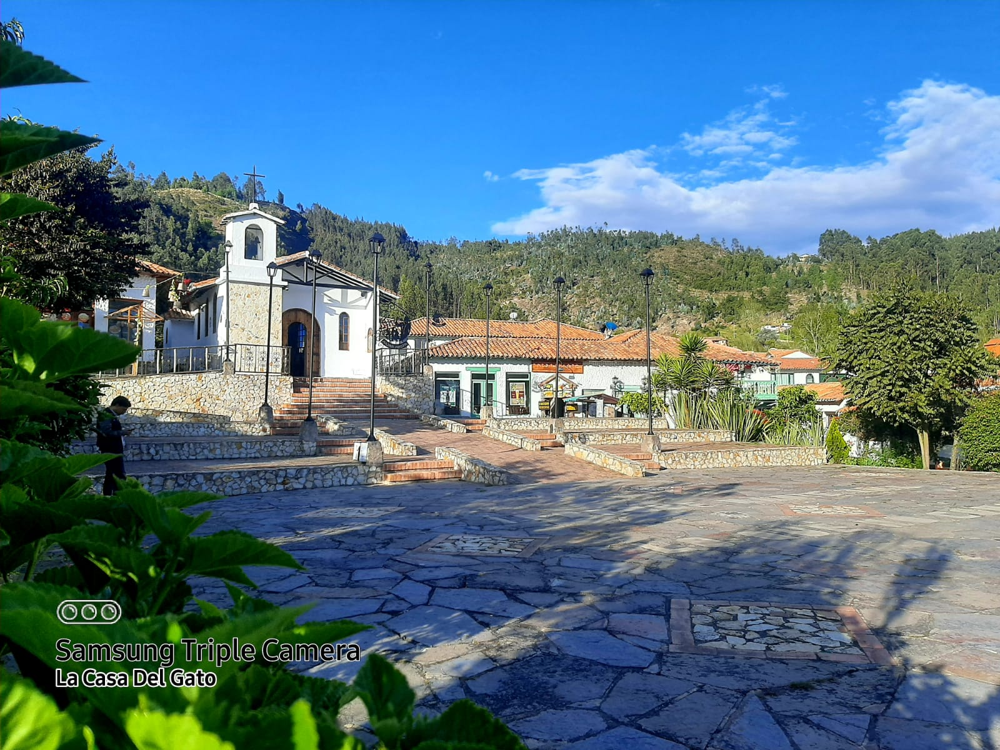
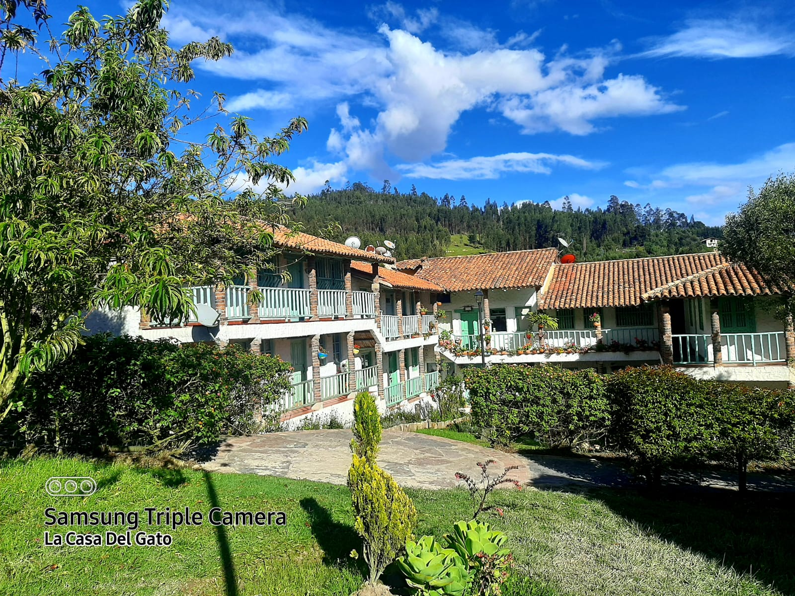
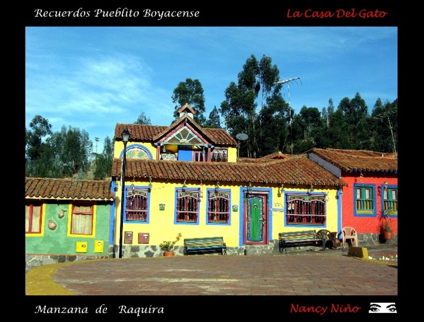
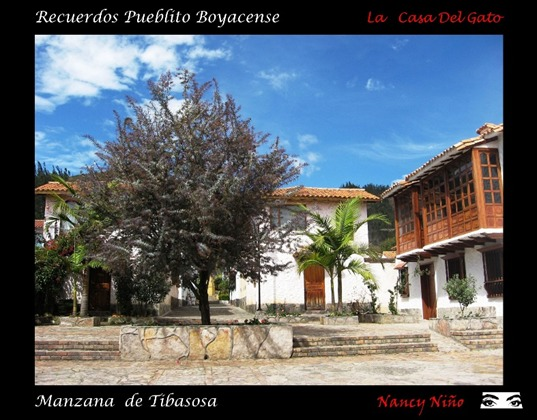
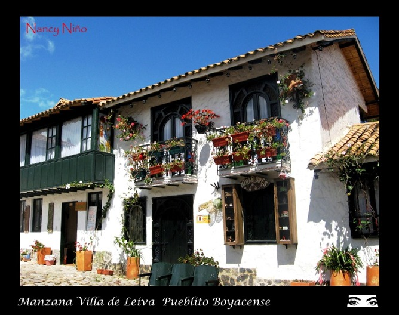
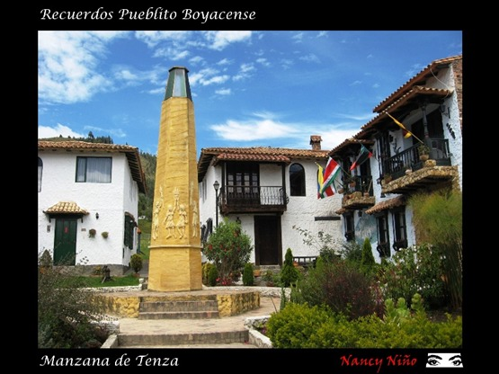
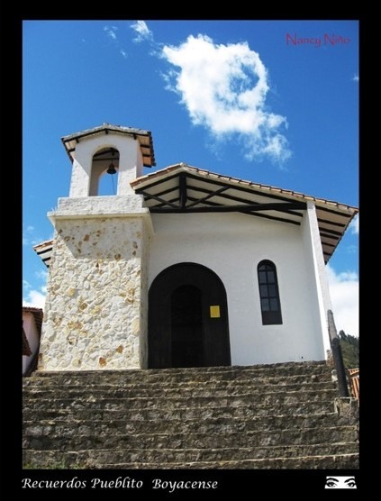

Energía
Reducir la demanda antes de generar, almacenar o transformar.

Territorio · cultura · transición energética
Desde nuestra presencia en Duitama pensamos un ecosistema del hidrógeno capaz de dialogar con la arquitectura, los saberes locales y la vida con la naturaleza, sin borrar aquello que hace único al territorio.
Fotografía aportada por La Casa del Gato.
Un laboratorio vivo en un pueblo con memoria
No pensamos la energía como una máquina separada de la vida. La pensamos junto al agua, los alimentos, la arquitectura y los saberes que permiten habitar un lugar con autonomía y responsabilidad.
Para Hidrógeno Verde Turquesa, la soberanía energética no significa aislarse. Significa conocer los recursos, reducir la demanda, producir y gestionar energía de manera apropiada, y decidir con mayor autonomía.
El hidrógeno no es una fuente primaria: es un vector capaz de almacenar energía y ponerla a disposición cuando una necesidad real lo justifica. Su valor crece al integrarse con eficiencia, fuentes renovables, agua y bioeconomía.
Esa capacidad también puede fortalecer la soberanía alimentaria mediante agua segura, conservación, monitoreo de cultivos, aprovechamiento de residuos y procesos productivos locales.
Una transición verdaderamente sostenible no reemplaza la cultura del lugar. Aprende de ella, mide con rigor y diseña a su escala.
Todo está conectado
Producir hidrógeno es técnicamente posible en muchos territorios, pero no de cualquier manera. La solución depende de los recursos disponibles, la seguridad, el costo, la operación y el beneficio verificable para quienes habitan el lugar.
Reducir la demanda antes de generar, almacenar o transformar.
Cuidar la fuente, tratar, recircular y usar con inteligencia.
Apoyar producción, conservación y transformación local.
Elegir por origen, desempeño, seguridad y posibilidad de retorno.
Diseñar tecnologías comprensibles, reparables y durables.
El hidrógeno entra en esta red únicamente cuando resuelve una necesidad mejor que las alternativas y puede hacerlo con seguridad, eficiencia y sentido territorial.
La casa como organismo
Explora los puntos de la imagen. Son hipótesis de integración para estudiar cómo una vivienda puede ganar confort y autonomía sin adquirir una apariencia industrial ni perder su memoria.

Toca un punto para explorar
Fotografía aportada por La Casa del Gato.Antes de incorporar generación se estudian orientación, sombras, estado estructural, paisaje y demanda. La cubierta también regula lluvia, radiación y confort, y su valor arquitectónico debe permanecer legible.
Hipótesis de integración · no representa una instalación existenteTierra, piedra, madera y otros sistemas pueden moderar cambios de temperatura. Su respuesta a humedad, sismo, fuego, uniones y mantenimiento debe caracterizarse antes de intervenir.
Hipótesis de integración · requiere estudio del sistema constructivoVentilación cruzada, iluminación natural, control solar y sellos adecuados pueden reducir la energía necesaria. Balcones y corredores son parte de esa inteligencia climática.
Hipótesis de integración · se valida según clima, uso y orientaciónCaptación de lluvia, riego eficiente, biodiversidad y una huerta a escala doméstica conectan energía, agua y soberanía alimentaria sin separar la vivienda de su paisaje.
Hipótesis de integración · depende de agua, suelo y prácticas localesMedición, control, almacenamiento y equipos deben ubicarse con acceso técnico, ventilación y distancias seguras. Si se evaluara hidrógeno, este núcleo exigiría diseño especializado y cumplimiento normativo.
Hipótesis de integración · el hidrógeno no está instalado en esta viviendaMesa de materiales
Los materiales tradicionales y biobasados pueden aportar identidad, confort y menor impacto. Para usarlos responsablemente se estudian como sistemas completos, no como una apariencia rústica añadida al final.
Inercia térmica, humedad, estabilización, erosión y respuesta de muros y uniones.
Procedencia, secado, protección, conexiones, fuego, durabilidad y mantenimiento.
Peso, aparejo, morteros, drenaje y relación con la estructura sismorresistente.
Aislamiento, absorción, compactación, biodegradación y protección frente al fuego.
Residuos y biomasa convertidos en componentes con trazabilidad y desempeño verificable.
Clima, humedad, viento, suelo, uso, amenazas y condición del edificio.
Procedencia, disponibilidad, desempeño esperado y posibilidad de reparación.
Resistencia, uniones, durabilidad, comportamiento térmico y fuego.
Normativa sismorresistente, incendios, instalaciones y eficiencia energética.
Archivo de investigación
Estas publicaciones desarrollan componentes de la visión. No representan instalaciones ejecutadas en Pueblito Boyacense; son rutas de investigación, formulación y evaluación que pueden orientar proyectos futuros.
Confort, salud y menor demanda antes de incorporar nuevas tecnologías.
Vivienda ↗ 02 Ecoaldea sostenibleAgua, energía, alimentación, materiales y gobernanza como sistema común.
Territorio ↗ 03 Prototipo escalableComparar rutas y bloques funcionales antes de construir o escalar.
Hidrógeno ↗ 04 HidroEcoCajaSeparación, vermicultura y aprovechamiento responsable de orgánicos.
Bioeconomía ↗ 05 Viento y aguaAprender de mecanismos tradicionales para investigar a pequeña escala.
Memoria técnica ↗Postales de una memoria viva
Plazoletas, fachadas, jardines y espacios comunes muestran cómo la arquitectura se convierte en encuentro. Selecciona una postal para mirarla de cerca.

Mirar de cerca
Mirar de cerca
Mirar de cerca
Mirar de cerca
Mirar de cercaPreguntas necesarias
No lo afirmamos. Esta página presenta la visión territorial desde la cual investigamos y formulamos soluciones. Cualquier implementación futura requeriría estudios, acuerdos, permisos, diseño, pruebas y verificación de seguridad.
Existen rutas que permiten producirlo en territorios muy diversos, siempre que haya una fuente de energía o materia prima adecuada, agua cuando corresponda, seguridad, capacidad operativa y viabilidad ambiental y económica.
No. La intención es estudiar cómo convivir con ella. El diseño debe proteger la escala, la identidad y el uso del edificio, e incorporar instalaciones solo cuando puedan hacerlo de forma segura y responsable.
El agua, el frío, el procesamiento, el monitoreo, la conservación y la producción de alimentos necesitan energía. Mejorar su confiabilidad y gestión fortalece capacidades locales, sin sustituir el conocimiento agrícola, la biodiversidad ni las decisiones comunitarias.
Nuestra presencia
Pueblito Boyacense · Manzana Cocuy
Duitama, Boyacá, Colombia
{kind=link}
{kind=link}
{kind=link}
{kind=link}
{kind=link}